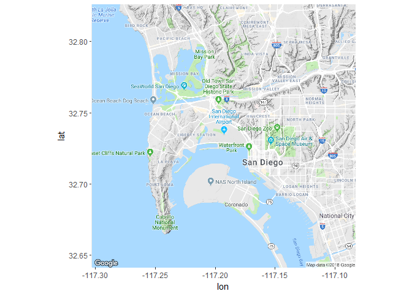
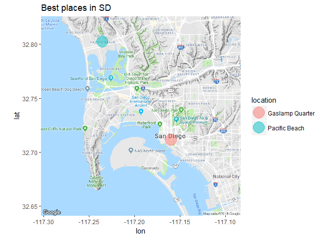
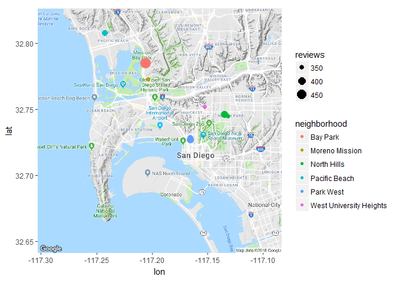
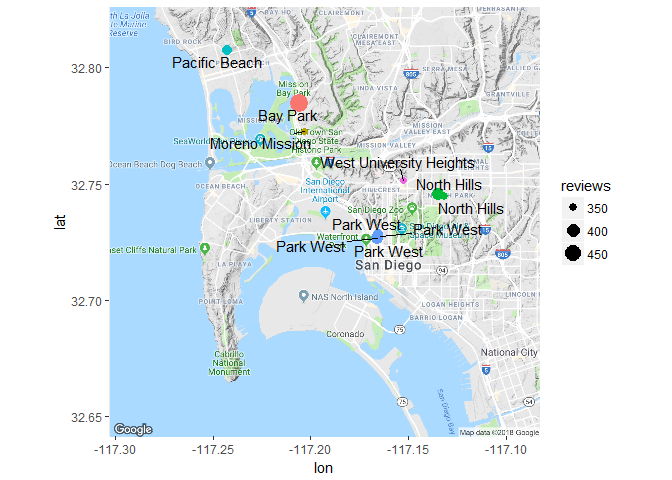
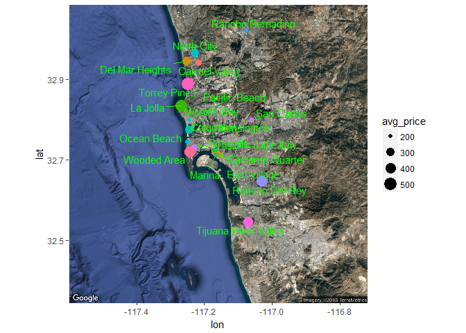
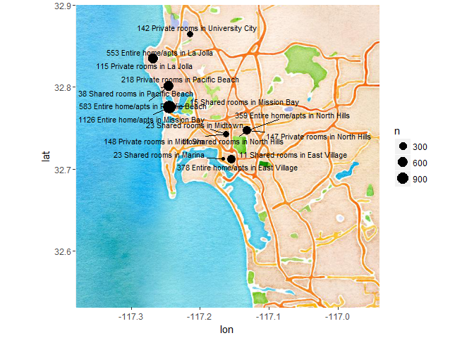

R Tutorial: Visualizing San Diego Airbnb Data with ggmap
Visualizing San Diego AirBnB Data With ggmap
In this short tutorial we are going to look at how to use the ggmap package to visualize some AirBnB data that include latitude and longitude information.
Here’s what our data look like. There’s nothing too interesting here, but we can compute some summary statistics and then plot them based on their geographic coordinates. The ggmap integration with dplyr and ggplot2 makes this really simple.
library(tidyverse)
library(ggmap)
df <- read.csv('sd2017.csv')
head(df)
## room_id survey_id host_id room_type country city borough
## 1 11637213 1436 24705242 Shared room NA San Diego NA
## 2 14351163 1436 87948847 Shared room NA San Diego NA
## 3 9327098 1436 31043523 Shared room NA San Diego NA
## 4 17535919 1436 117987352 Shared room NA San Diego NA
## 5 3688119 1436 13209607 Shared room NA San Diego NA
## 6 14762372 1436 21234531 Shared room NA San Diego NA
## neighborhood reviews overall_satisfaction accommodates bedrooms
## 1 Pacific Beach 2 0 2 1
## 2 Mountain View 0 0 1 1
## 3 Tierrasanta 0 0 2 1
## 4 Pacific Beach 1 0 3 1
## 5 Cortez Hill 1 0 2 1
## 6 Ocean Beach 9 5 3 1
## bathrooms price minstay last_modified latitude longitude
## 1 NA 63 NA 2017-07-12 05:19:23.000975 32.79526 -117.2527
## 2 NA 80 NA 2017-07-12 05:19:22.998198 32.69982 -117.1068
## 3 NA 75 NA 2017-07-12 05:19:22.995312 32.83610 -117.0850
## 4 NA 70 NA 2017-07-12 05:19:22.992387 32.80124 -117.2415
## 5 NA 78 NA 2017-07-12 05:19:22.989440 32.72485 -117.1655
## 6 NA 70 NA 2017-07-12 05:19:22.986805 32.73647 -117.2521
There are really only a few functions you need to use in order to make some cool geographic visualizations. get_map(), ggmap(), and geocode() will take you pretty far.
Since our dataset contains rental information for San Diego, CA, let’s get a San Diego map. Notice that getting the zoom argument correct will take a few tries. There are also different maptypes that you can download: satellite, watercolor, and a few others.
This tutorial is based on the ggmap tutorial found on R-bloggers.com
First we get our map. The great thing about this is that we can simply type the name of the location in and it will return a map to us. Then you just pipe it into ggmap() and save it so that you can then overlay your normal ggplot2 layers on top. The default zoom level is 10, so this one is a little bit more zoomed in.
sd_1 <- get_map("San Diego Airport", zoom=12) %>%
ggmap()
sd_1

Now let’s say we want to plot the locations of two of our favorite places in SD.
#We use a tibble so we don't have to force these names to characters
sd_locations <- tibble(location = c('Pacific Beach', 'Gaslamp Quarter'))
sd_locations
## # A tibble: 2 x 1
## location
## <chr>
## 1 Pacific Beach
## 2 Gaslamp Quarter
Now we can easily look up the latitude and longitude attributes of these locations with the geocode() function.
sd_locs <- geocode(sd_locations$location)
sd_locs
## lon lat
## 1 -117.2356 32.80246
## 2 -117.1599 32.71143
Now we simply combine the two data frames and we have the lat and lon coordinates. Notice that they are called “lon” and “lat.” If you change the names it might cause problems later, so try to keep the naming consistent.
sd_locations <- cbind(sd_locations, sd_locs)
sd_locations
## location lon lat
## 1 Pacific Beach -117.2356 32.80246
## 2 Gaslamp Quarter -117.1599 32.71143
Finally, we will plot these locations over top of our map object. Later we’ll overlay text and numbers to these points. I should also mention again that it took a few tries to get the zoom level of the map to properly fit both locations.
sd_1 +
geom_point(data=sd_locations, aes(lon, lat, color=location), size=8, alpha = .5)+
labs(title='Best places in SD')

Now comes the fun part: layering ggplot2 objects on top of our maps.
Let’s leverage our 2017 AirBnB dataset of 9111 observations and 19 variables. As a first task, we want to see which neighborhoods have the most reviews. We will consider the top 10 neighborhoods with the most reviews, so we won’t clutter our map too much.
df_neigh <- df %>%
group_by(neighborhood)%>%
rename('lat' = latitude, 'lon' = longitude)%>%
select(neighborhood, lat, lon, reviews)%>%
arrange(desc(reviews))%>%
head(10)
For some reason it is counting the Park West neighborhood three times. Now we will plot these over our map we downloaded earlier.
sd_1 +
geom_point(data=df_neigh, aes(lon, lat, color=neighborhood, size=reviews))

This is OK, but what if we want the text of the neighborhood displayed? Maybe we aren’t familiar with SD, so it might be helpful. For this, I recommend the ggrepel package. It is very useful when plotting lots of text because it will automatically give space to your text items so they don’t overlap.
library(ggrepel)
sd_1 +
geom_point(data=df_neigh, aes(lon, lat,size=reviews, color=neighborhood))+
geom_text_repel(data=df_neigh, aes(label = neighborhood))+
guides(color=FALSE) #This will not include the guide for color aesthetic

In my opinion this is starting to look better.
Now let’s imagine that we want to know the average price for each neighborhood. Let’s examine the top 20 neighborhoods by highest average booking price. One issue that we will have to resolve is the lat and lon coordinates for the neighborhood. We will just average each neighborhood’s coordinates to get a neighborhood’s coordinates.
df_prices <- df %>%
group_by(neighborhood)%>%
summarize(avg_price = mean(price))%>%
arrange(desc(avg_price))%>%
head(20)
head(df_prices)
## # A tibble: 6 x 2
## neighborhood avg_price
## <fctr> <dbl>
## 1 Torrey Pines 506.0000
## 2 La Jolla 442.5313
## 3 Rancho Del Rey 440.3333
## 4 Wooded Area 429.0577
## 5 Tijuana River Valley 360.0000
## 6 North City 304.7600
#Now we have to average the coordinates then join back for plotting
df_avg <- df %>%
group_by(neighborhood)%>%
summarize(mean_lat = mean(latitude),
mean_long = mean(longitude))%>%
inner_join(df_prices, by='neighborhood')%>%
rename('lat' = mean_lat, 'lon' = mean_long)
head(df_avg)
## # A tibble: 6 x 4
## neighborhood lat lon avg_price
## <fctr> <dbl> <dbl> <dbl>
## 1 Carmel Valley 32.94154 -117.2175 226.2887
## 2 Columbia 32.71891 -117.1690 275.8889
## 3 Del Mar Heights 32.94553 -117.2521 302.5323
## 4 East Village 32.71193 -117.1545 211.7506
## 5 Gaslamp Quarter 32.71287 -117.1603 192.7826
## 6 Kensington 32.76280 -117.1042 189.3333
Finally we can plot these since we have the average coordinates. We might also need to zoom out our map to fit these points. Let’s try a new maptype while we’re at it.
One key point is that you must SAVE the map object first before trying to layer on the ggplot objects. This caused me 30 minutes of headache (thanks StackOverflow).
sd_2 <- get_map('San Diego', maptype = 'satellite') %>% ggmap()
sd_2 +
geom_point(data=df_avg, aes(lon, lat,size=avg_price, color=neighborhood))+
geom_text_repel(data=df_avg, aes(label = neighborhood), color='green')+
guides(color=FALSE) #This will not include the guide for color aesthetic

Judging from this it looks like the most expensive areas are La Jolla, Torrey Pines, and Wooded Area. Pretty much all these places are right on the beach.
One problem with this analysis is that it includes private rooms, shared rooms, and entire houses. Let’s see if we can count where the different types of AirBnB are most popular.
In order to do this we will first count the room types for each neighborhood, then arrange them in descending order by count, then group by room type, then take the top 5 areas based on count. It sounds confusing, I know.
df_counts <- df %>%
count(room_type, neighborhood)%>%
arrange(desc(n))%>%
group_by(room_type)%>%
top_n(5, n)
head(df_counts)
## # A tibble: 6 x 3
## # Groups: room_type [2]
## room_type neighborhood n
## <fctr> <fctr> <int>
## 1 Entire home/apt Mission Bay 1126
## 2 Entire home/apt Pacific Beach 583
## 3 Entire home/apt La Jolla 553
## 4 Entire home/apt East Village 378
## 5 Entire home/apt North Hills 359
## 6 Private room Pacific Beach 218
But again because we aggregated, we need to average the lon and lat coords in order to plot them. This we’ll use a different technique: filtering and then joining. .
df_coord <- df %>%
filter(neighborhood %in% df_counts$neighborhood)%>%
group_by(neighborhood)%>%
summarize(lon = mean(longitude),
lat = mean(latitude))%>%
inner_join(df_counts, by='neighborhood')
head(df_coord)
## # A tibble: 6 x 5
## neighborhood lon lat room_type n
## <fctr> <dbl> <dbl> <fctr> <int>
## 1 East Village -117.1545 32.71193 Entire home/apt 378
## 2 East Village -117.1545 32.71193 Shared room 11
## 3 La Jolla -117.2676 32.83492 Entire home/apt 553
## 4 La Jolla -117.2676 32.83492 Private room 115
## 5 Marina -117.1667 32.71217 Shared room 23
## 6 Midtown -117.1629 32.74249 Private room 148
We’re almost done! Now let’s plot. This time we will display the counts of properties for each neighborhood.
sd_3 <- get_map('San Diego', zoom=11, maptype = 'watercolor')%>%ggmap()
sd_3 +
geom_point(data = df_coord, aes(lon, lat, size=n))+
geom_text_repel(data=df_coord, aes(label = paste0(n,' ', paste0(room_type,'s'), ' in ', neighborhood, collapse=NULL)), color='black', size=3)

It’s a little bit cluttered, but I think the information shines through. From this we can see that Mission Bay has a lot of entire homes for rent and only a few shared rooms.
The North Hills, however, has lots of private rooms (about 50%) in the area. And finally, Pacific Beach has a relatively big number of shared rooms (38) compared to the other areas.